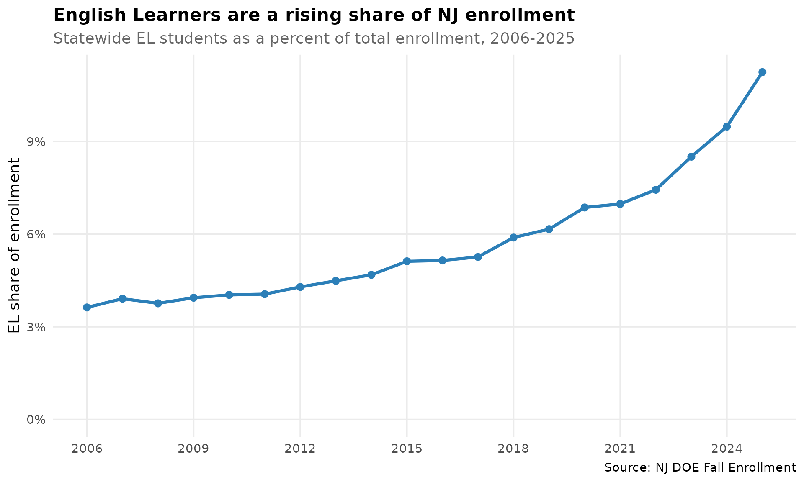
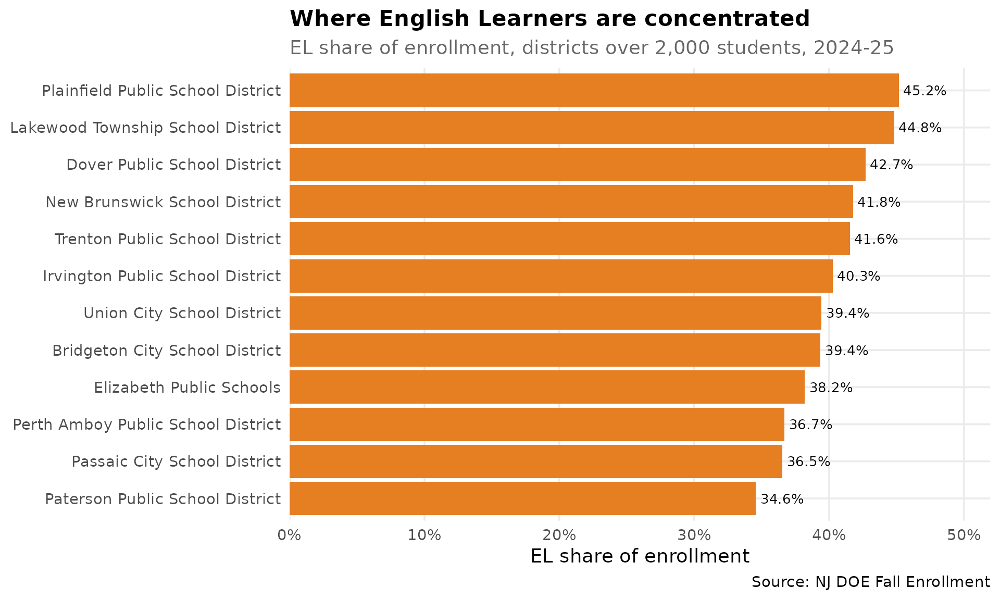
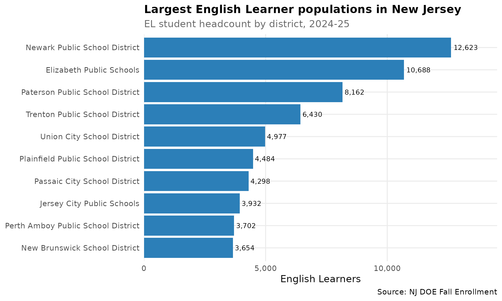

fetch_ell() returns the English Learner
population — how many students are identified as English
Learners (formerly “Limited English Proficient”, now “Multilingual
Learners” in NJ DOE parlance) and what share of enrollment they make up
— at the state, district, and school level. The numbers come straight
from the NJ DOE Fall Enrollment files; no count is ever derived from a
percentage.
This is the EL population feature. EL proficiency
(the WIDA ACCESS for ELLs assessment) is a separate measure, available
through fetch_access().
theme_nj <- function() {
theme_minimal(base_size = 14) +
theme(
plot.title = element_text(face = "bold", size = 16),
plot.subtitle = element_text(color = "gray40"),
panel.grid.minor = element_blank(),
legend.position = "bottom"
)
}
el_blue <- "#2C7FB8"
el_orange <- "#E67E22"1. New Jersey’s English Learner population has tripled since 2006
In the 2005-06 school year, New Jersey enrolled about 50,000 English Learners — 3.6% of all students. By 2024-25 that had grown to more than 155,000, 11.2% of enrollment. The EL count roughly tripled while total enrollment barely moved, so the EL share of New Jersey’s classrooms has more than doubled in two decades.
# Statewide EL population, every year NJ publishes a count (2006-2025).
state_el <- fetch_ell_multi(2006:2025, use_cache = TRUE) %>%
filter(is_state) %>%
select(end_year, n_students, total_enrollment, pct_of_enrollment) %>%
arrange(end_year)
stopifnot(nrow(state_el) > 0)
print(state_el)
#> end_year n_students total_enrollment pct_of_enrollment
#> 1 2006 50554.0 1393782 3.627111
#> 2 2007 54268.0 1387964 3.909901
#> 3 2008 51824.0 1378630 3.759093
#> 4 2009 54284.0 1377728 3.940110
#> 5 2010 55803.0 1383706 4.032867
#> 6 2011 55363.5 1364494 4.057437
#> 7 2012 58514.0 1363996 4.289894
#> 8 2013 61639.0 1373182 4.488773
#> 9 2014 64208.0 1371399 4.681934
#> 10 2015 70119.0 1369379 5.120496
#> 11 2016 70661.0 1372982 5.146535
#> 12 2017 72257.0 1373267 5.261686
#> 13 2018 80693.0 1370236 5.888986
#> 14 2019 84079.0 1364714 6.160925
#> 15 2020 94413.0 1375828 6.862265
#> 16 2021 95059.0 1362400 6.977319
#> 17 2022 101185.0 1360916 7.435066
#> 18 2023 116699.0 1371921 8.506248
#> 19 2024 130823.5 1379988 9.480046
#> 20 2025 155304.0 1381182 11.244282
stopifnot(nrow(state_el) > 0)
ggplot(state_el, aes(x = end_year, y = pct_of_enrollment)) +
geom_line(color = el_blue, linewidth = 1.3) +
geom_point(color = el_blue, size = 2.5) +
scale_y_continuous(labels = label_percent(scale = 1), limits = c(0, NA)) +
scale_x_continuous(breaks = seq(2006, 2025, 3)) +
labs(
title = "English Learners are a rising share of NJ enrollment",
subtitle = "Statewide EL students as a percent of total enrollment, 2006-2025",
x = NULL, y = "EL share of enrollment",
caption = "Source: NJ DOE Fall Enrollment"
) +
theme_nj()
2. In a dozen districts, two of every five students are English Learners
EL students are far from evenly spread. Statewide the share is about 11%, but in the highest-EL districts more than 40% of students are English Learners. Plainfield tops the list at roughly 45%, followed by a cluster of Central and North Jersey cities.
ell_2025 <- fetch_ell(2025, use_cache = TRUE)
stopifnot(nrow(ell_2025) > 0)
top_share <- ell_2025 %>%
filter(is_district, total_enrollment > 2000, !is.na(n_students)) %>%
arrange(desc(pct_of_enrollment)) %>%
select(district_name, n_students, total_enrollment, pct_of_enrollment) %>%
head(12)
print(top_share)
#> district_name n_students total_enrollment
#> 1 Plainfield Public School District 4484.0 9924.5
#> 2 Lakewood Township School District 1843.0 4112.0
#> 3 Dover Public School District 1462.5 3424.5
#> 4 New Brunswick School District 3654.0 8747.0
#> 5 Trenton Public School District 6430.0 15473.5
#> 6 Irvington Public School District 3253.0 8077.0
#> 7 Union City School District 4977.0 12617.0
#> 8 Bridgeton City School District 2379.0 6044.0
#> 9 Elizabeth Public Schools 10688.0 27979.5
#> 10 Perth Amboy Public School District 3702.0 10089.0
#> 11 Passaic City School District 4298.0 11764.0
#> 12 Paterson Public School District 8162.0 23609.0
#> pct_of_enrollment
#> 1 45.18112
#> 2 44.82004
#> 3 42.70696
#> 4 41.77432
#> 5 41.55492
#> 6 40.27485
#> 7 39.44678
#> 8 39.36135
#> 9 38.19940
#> 10 36.69343
#> 11 36.53519
#> 12 34.57156
stopifnot(nrow(top_share) > 0)
ggplot(top_share, aes(x = reorder(district_name, pct_of_enrollment),
y = pct_of_enrollment)) +
geom_col(fill = el_orange) +
geom_text(aes(label = label_percent(scale = 1, accuracy = 0.1)(pct_of_enrollment)),
hjust = -0.1, size = 3.5) +
coord_flip() +
scale_y_continuous(labels = label_percent(scale = 1),
expand = expansion(mult = c(0, 0.15))) +
labs(
title = "Where English Learners are concentrated",
subtitle = "EL share of enrollment, districts over 2,000 students, 2024-25",
x = NULL, y = "EL share of enrollment",
caption = "Source: NJ DOE Fall Enrollment"
) +
theme_nj()
3. The biggest EL populations are in New Jersey’s largest cities
Share and headcount tell different stories. The districts with the most EL students are the big urban systems: Newark enrolls more than 12,000 English Learners, Elizabeth nearly 11,000, and Paterson over 8,000. Together a handful of cities account for a large slice of the state’s EL students.
largest_el <- ell_2025 %>%
filter(is_district, !is.na(n_students)) %>%
arrange(desc(n_students)) %>%
select(district_name, n_students, total_enrollment, pct_of_enrollment) %>%
head(10)
stopifnot(nrow(largest_el) > 0)
print(largest_el)
#> district_name n_students total_enrollment
#> 1 Newark Public School District 12623 43980.0
#> 2 Elizabeth Public Schools 10688 27979.5
#> 3 Paterson Public School District 8162 23609.0
#> 4 Trenton Public School District 6430 15473.5
#> 5 Union City School District 4977 12617.0
#> 6 Plainfield Public School District 4484 9924.5
#> 7 Passaic City School District 4298 11764.0
#> 8 Jersey City Public Schools 3932 25692.0
#> 9 Perth Amboy Public School District 3702 10089.0
#> 10 New Brunswick School District 3654 8747.0
#> pct_of_enrollment
#> 1 28.70168
#> 2 38.19940
#> 3 34.57156
#> 4 41.55492
#> 5 39.44678
#> 6 45.18112
#> 7 36.53519
#> 8 15.30437
#> 9 36.69343
#> 10 41.77432
stopifnot(nrow(largest_el) > 0)
ggplot(largest_el, aes(x = reorder(district_name, n_students), y = n_students)) +
geom_col(fill = el_blue) +
geom_text(aes(label = comma(round(n_students))), hjust = -0.1, size = 3.5) +
coord_flip() +
scale_y_continuous(labels = comma, expand = expansion(mult = c(0, 0.15))) +
labs(
title = "Largest English Learner populations in New Jersey",
subtitle = "EL student headcount by district, 2024-25",
x = NULL, y = "English Learners",
caption = "Source: NJ DOE Fall Enrollment"
) +
theme_nj()
Data notes
-
Source: NJ DOE Fall Enrollment files
(
nj.gov/education/doedata/enr/). The EL measure appears asLEPthrough 2018-19,English Learnersfor 2019-20 through 2022-23, andMultilingual Learnersfrom 2023-24 onward —fetch_ell()reconciles the renames. -
Years: 2006-2026
(
get_available_ell_years()). Earlier enrollment files do not report an EL measure. -
Counts vs. percent (COVID-era gap): for 2020, 2021,
and 2022 the NJ DOE district and school worksheets
published only an EL percent, not a headcount. For
those entity-years
n_studentsisNAand onlypct_of_enrollmentis populated — the count is never back-derived from the percent. The statewide count is published every year. From 2023-24 on, real counts return at every level. -
No suppression: NJ does not suppress EL counts, so
n_students_lowerandn_students_upperequaln_studentswherever a count is published. -
Fractional values: some counts and enrollment
totals carry a
.5— these are real shared-time / county-vocational FTE students, preserved exactly as published. -
EL status: NJ publishes a single current-EL
headcount, so
el_statusis always"current"andsubgroupis always"total".
sessionInfo()
#> R version 4.6.0 (2026-04-24)
#> Platform: x86_64-pc-linux-gnu
#> Running under: Ubuntu 24.04.4 LTS
#>
#> Matrix products: default
#> BLAS: /usr/lib/x86_64-linux-gnu/openblas-pthread/libblas.so.3
#> LAPACK: /usr/lib/x86_64-linux-gnu/openblas-pthread/libopenblasp-r0.3.26.so; LAPACK version 3.12.0
#>
#> locale:
#> [1] LC_CTYPE=C.UTF-8 LC_NUMERIC=C LC_TIME=C.UTF-8
#> [4] LC_COLLATE=C.UTF-8 LC_MONETARY=C.UTF-8 LC_MESSAGES=C.UTF-8
#> [7] LC_PAPER=C.UTF-8 LC_NAME=C LC_ADDRESS=C
#> [10] LC_TELEPHONE=C LC_MEASUREMENT=C.UTF-8 LC_IDENTIFICATION=C
#>
#> time zone: UTC
#> tzcode source: system (glibc)
#>
#> attached base packages:
#> [1] stats graphics grDevices utils datasets methods base
#>
#> other attached packages:
#> [1] scales_1.4.0 dplyr_1.2.1 ggplot2_4.0.3
#> [4] njschooldata_0.9.18
#>
#> loaded via a namespace (and not attached):
#> [1] sass_0.4.10 generics_0.1.4 tidyr_1.3.2 stringi_1.8.7
#> [5] hms_1.1.4 digest_0.6.39 magrittr_2.0.5 evaluate_1.0.5
#> [9] grid_4.6.0 timechange_0.4.0 RColorBrewer_1.1-3 fastmap_1.2.0
#> [13] cellranger_1.1.0 jsonlite_2.0.0 httr_1.4.8 purrr_1.2.2
#> [17] codetools_0.2-20 textshaping_1.0.5 jquerylib_0.1.4 cli_3.6.6
#> [21] crayon_1.5.3 rlang_1.2.0 bit64_4.8.2 withr_3.0.3
#> [25] cachem_1.1.0 yaml_2.3.12 otel_0.2.0 parallel_4.6.0
#> [29] downloader_0.4.1 tools_4.6.0 tzdb_0.5.0 curl_7.1.0
#> [33] vctrs_0.7.3 R6_2.6.1 lifecycle_1.0.5 lubridate_1.9.5
#> [37] snakecase_0.11.1 stringr_1.6.0 bit_4.6.0 fs_2.1.0
#> [41] vroom_1.7.1 ragg_1.5.2 janitor_2.2.1 pkgconfig_2.0.3
#> [45] desc_1.4.3 pkgdown_2.2.0 pillar_1.11.1 bslib_0.11.0
#> [49] gtable_0.3.6 glue_1.8.1 systemfonts_1.3.2 xfun_0.59
#> [53] tibble_3.3.1 tidyselect_1.2.1 knitr_1.51 farver_2.1.2
#> [57] htmltools_0.5.9 labeling_0.4.3 rmarkdown_2.31 readr_2.2.0
#> [61] compiler_4.6.0 S7_0.2.2 readxl_1.5.0